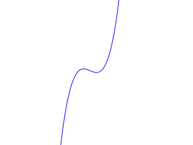
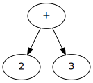

Strucc
Igaz-e az, hogy a strucc egyfajta madár?
Megoldás
Definíció kérdése. Biológiából igen, de OOP-ben általában nem. Ugyanis
ha a Bird osztálynak van egy fly() tagfüggvénye,
akkor az Ostrich osztálynak is lesz fly() tagfüggvénye.
Ha minden madár tud repülni, és a strucc egy madár, akkor a strucc is tud repülni.
Ezért OOP-ben az Ostrich osztály nem szabad a madárból származtassa
magát, különben megsérti azt a szerződést, amelyet a Bird osztály
a használóival kötött (ti. hogy meg lehet hívni az objektumon a fly()
tagfüggvényt, és az értelmes dolgot fog csinálni).
Kör
Igaz-e az, hogy a kör öröklődik az ellipszis osztályból?
Megoldás
Mint a struccos példa: matekból igen, OOP-ből nem. Ha az ellipszis ígér olyat,
amit a kör nem tud betartani (például hogy van set_size(width, height)
tagfüggvénye), akkor a kör nem lehet ellipszis.
Ellipszis
Származtatható-e az ellipszis a kör osztályból?
Megoldás
Örökölné a sugarát lekérdező függvényt is. Ha pl. ilyen van, akkor semmiképp.
Ellipse e1{2, 3};
std::cout << e1.get_radius(); // ?!Most vexing parse
Tulajdonképp mi lesz itt a c2, hogyan érti ezt a sort a fordító?
Complex c2(Complex(c1), Complex());Megoldás
Amikor a C++ egy sornál választhat, hogy egy objektum definíciójáról
vagy egy függvény deklarációjáról van szó, mindig az utóbbit részesíti előnyben.
A c2 ezért egy függvény lett, amely két paraméterű, és Complex
visszatérési értékű. Az első paraméter típusa Complex, neve pedig c1.
(Igen, és a zárójelet, mivel nem módosítja a jelentést, feleslegesnek ítéli a fordító.
Próbáld ki: int (main)(int (argc), char **(argv)){}!) A második, névtelen paraméternél egy függvény típust
adunk meg; a függvénynek nincs paramétere, a visszatérési típusa Complex.
A tömbökhöz hasonlóan a paraméterként átadott függvényeket pointerként kezeli a fordító.
Ezek alapján a c2-es sor ezzel egyenértékű:
Complex c2(Complex param1, Complex (*param2)());Így már jobban látszik, hogy ez egy függvény.
inline virtuális függvény?
Lehet egy virtuális függvényt osztályon belül, inline definiálni? Úgy tűnhet, semmi értelme, mert a virtuális függvényt nem lehet a hívás helyén kifejteni: a hívása mindig indirekt, a virtuális függvénytábla pointerén keresztül történik.
Megoldás
A fenti példákban a szabatosság kedvéért vannak az osztályon belül megírva a függvények. Ezt meg szabad tenni a virtuális függvényeknél is. Mivel a fordító tudja, hogy virtuális függvényről van szó, tudja azt is, hogy a virtuális függvénytábla pointere miatt muszáj nem inline változatot is készítenie belőle. A hívás általában a függvénytáblán keresztül történik, azonban lehetséges olyan helyzet, ahol már fordítási időben ki lehet választani a függvényt, és így akár kódbeillesztéssel is megvalósítható a hívás:
Constant c1{5.1};
c1.print(std::cout);Itt például pontosan ismert a c1 objektum típusa.
Inicializálás
Mi a különbség az alábbi két inicializálás között?
Complex c1{2.3, 3.4}, c2 = {2.3, 3.4};Megoldás
Semmi.
Üres objektum
Kérdések az előadás Variable osztályával kapcsolatban.
Egy Variable objektumban nincs adattag, üres. Lehet az, hogy semennyi
helyet nem foglal a memóriából?
Megoldás
Tartalmaz egy pointert, amelyik a virtuális függvénytáblájára mutat. Úgyhogy nem üres, csak nincsenek a felhasználó által is látható adattagjai.
Van a Variable osztálynak saját destruktora?
Megoldás
Van, a fordító írt neki. Egy olyat, ami meghívja azt adattagok destruktorait (bár most nincsenek adattagok), utána pedig meghívja az ős destruktorát.
Virtuális függvények száma
Az előadás TwoOperand osztályával kapcsolatos kérdés.
Egyre több a virtuális függvény; a kétoperandusú osztályban most lett két új. Nem lesznek ettől túl nagyok a kétoperandusú objektumok?
Megoldás
Nem. Az objektumokban nincsenek virtuális függvényekre mutató pointerek, hanem csak egy virtuális függvénytáblára mutató pointer van (amely lényegében egy pointereket tartalmazó struktúra). Így ha már volt egy virtuális függvény, további virtuális függvények hozzáadásának nincs semmilyen plusz költsége.
Nem virtuális interfész
Az előadás kifejezésfáival kapcsolatos kérdés.
Ha az osztály publikus interfészén nem kellene virtuális függvényeknek
lenniük, akkor az Expression osztálynak miért vannak ilyenjei? Tudsz
példákat mondani arra, hogy a kiértékelésnél és a kiírásnál miért kellene, hogyan
lehetne a függvénysablon tervezési mintát alkalmazni?
Megoldás
A print() metódus és a globális operator<< (amely szinte része az osztálynak)
már most is ilyen. A print() lehetne privát, a kiíró operátor
pedig friend, és pl. minden kiírt kifejezés elé odaírná, hogy f(x)=.
A leszármazottak pedig ebből tudnák, hogy az nem az ő dolguk.
Az evaluate() is lehetne privát, mondjuk do_evaluate()
néven. A publikus, nem virtuális evaluate() pedig ellenőrizné, hogy
nem hibás-e a paraméterként kapott double x, mielőtt ténylegesen
belekezd a kiértékelésbe. Például hogy nem inf vagy nan
értékű-e.
Különbség és hányados
Az előadás kifejezésfáival kapcsolatos feladat.
Implementálj különbség és hányados osztályokat!
Megoldás
Mint az összeg és a szorzat, csak - és / operátorokkal.
Függvény osztály
Az előadás kifejezésfáival kapcsolatos feladat.
Tervezz és implementálj egy általános függvény osztályt! Hova illik ez be az osztályhierarchiába? Implementálj egy szinusz és egy koszinusz osztályt! Ha ügyesen tervezted meg a függvény osztályt, akkor ezek az összeghez és a szorzathoz hasonlóan pár sorból fognak állni.
Megoldás
A függvény osztály hasonló a kétoperandusúhoz. Pl. sin(2x): a kiértékeléskor ki kell értékelni a belül tárolt kifejezést (2x), utána pedig alkalmazni kell a függvényt (sin). A kiírásnál pedig ki kell írni a függvény nevét, zárójel, belső kifejezés, zárójel.
Ha kész vannak a függvény, szinusz és koszinusz osztályok, akkor most írd meg azok deriválását is! Figyelj arra, hogy az összetett függvény deriválási szabályát kell alkalmaznod: f(g(x))'=f'(g(x))·g'(x), mert a szinusz vagy a koszinusz objektum is egy kifejezést tartalmaz. Használd a függvénysablon tervezési mintát! Próbáld meg a függvény osztályban megvalósítani, amit csak lehet, hogy a leszármazottak minél egyszerűbbek legyenek.
Válaszd külön az interfészeket és az implementációkat! Az egy fájlból álló programot bontsd szét fejlécfájlokra és forrásfájlokra! Tartsd be a C++ projekteknél megszokott elvet: egy osztály, egy forrásfájl.
Virtuális konstruktor
Miért nem lehet egy konstruktor virtuális?
Megoldás
Amíg még létre sem jött az objektum, nincs virtuális függvénytábla. A virtuális konstruktor tervezési mintát így csak meglévő objektumokkal tudjuk használni.
Egyszerűsítés
Az előadás kifejezésfáival kapcsolatos feladat.
Írd meg a többi osztály, pl. különbség, függvény, egyszerűsítő függvényeit is! Vigyázz, a különbség és a hányados nem kommutatív! Vajon a függvény osztályban az egyszerűsítést mennyire lehet általánosan megfogalmazni?
Függvény rajzolása
Az SVG (scalable vector graphics) egy ún. vektorgrafikus képformátum. Ebben nem képpontok vannak megadva, hanem egyszerű síkidomok (szakasz, kör stb.), és a képnéző program dolga megrajzolni a képet. Egy SVG fájl, amely néhány szakaszt tartalmaz, így néz ki:
<svg width="320" height="80" xmlns="http://www.w3.org/2000/svg">
<line x1="30" y1="17.9136" x2="0" y2="42.9137" stroke="blue" />
<line x1="60" y1="21.0799" x2="30" y2="17.9136" stroke="blue" />
<line x1="90" y1="48.3747" x2="60" y2="21.0799" stroke="blue" />
<line x1="120" y1="64.9893" x2="90" y2="48.374" stroke="blue" />
</svg>Írj egy olyan programrészt, amely kirajzolja a beolvasáskor kapott függvényt! Ehhez nincs más dolgod, mint az x tengelyen haladva kiértékelni néhány helyen (mondjuk –5-től +5-ig, 0,1 lépésközzel), és szakaszokkal összekötni a kapott pontokat. Figyelj arra, hogy valamennyire ki kell nagyítanod a képet (hogy ne egy képpontnyi legyen az egység, mert akkor szinte semmi nem fog látszani), és a matematikai origót a kép közepére tenned (a fenti 320×80-as méretű képnél pl. x+160 és y+40). Az SVG-ben az y koordináta fentről lefelé nő, ezért a kapott y koordinátákat negáld a nagyítás és az eltolás előtt!
Tetszőlegesen használhatsz C (fprintf) vagy C++ (ostream) fájlkezelést is. A C-s talán egyszerűbb,
mert a koordináták helyére %f-et írhatsz, és egy nagy, nem pedig sok apró sztringet kell megadnod.
A C++11-ben használhatsz ún. raw string literal-okat, amelyeknél nem kell külön kezelned az idézőjelet
és a visszapert. A legegyszerűbb raw string literal R"( karakterekkel kezdődik és )"
karakterekkel fejeződik be:
std::cout << R"(Hello idézőjelben "\n" sortörés!)";Hello idézőjelben "\n" sortörés!
Így könnyedén megadhatod az idézőjelekkel teli sztringeket:
fprintf(fp, R"(<svg width="320" height="80" xmlns="http://www.w3.org/2000/svg">)");A kapott fájlt egy böngészőprogrammal, vagy szinte bármelyik képnéző programmal meg tudod nyitni.
0.5 x x x * * * 0.8 x x * * + 0.5*x*x*x + 0.8*x*x

Megoldás
#include <cstdio>
void draw(Expression *e, char const *filename, char const *color) {
FILE *fp = fopen(filename, "wt");
double w = 320, h = 240;
double zoom = 20;
fprintf(fp, R"(<svg width="%f" height="%f" xmlns="http://www.w3.org/2000/svg">)", w, h);
double dx = 0.1;
for (double x = -5.0; x <= +5.0; x += dx) {
double x1 = x;
double y1 = e->evaluate(x1);
double x2 = x + dx;
double y2 = e->evaluate(x2);
x1 = x1 * zoom + w/2;
y1 = y1 * -zoom + h/2;
x2 = x2 * zoom + w/2;
y2 = y2 * -zoom + h/2;
fprintf(fp, R"(<line x1="%f" y1="%f" x2="%f" y2="%f" stroke="%s" />)", x1, y1, x2, y2, color);
}
fprintf(fp, R"(</svg>)");
}Kifejezésfa rajzolása
A graphviz nevű programmal könnyedén lehet gráfokat rajzolni. Csak meg kell neki adni a csúcsokat és az éleket, és automatikusan elhelyezi őket egy képen – figyelve arra is, hogy szimmetrikus gráfokat rajzoljon, ha lehet. Egy egyszerű irányított gráfot így lehet neki megadni:
digraph ketto_plusz_harom {
csucs_egy [label="+"]; // csúcs: név és attribútumok
csucs_ketto [label="2"];
csucs_harom [label="3"];
csucs_egy -> csucs_ketto; // él: honnan -> hova
csucs_egy -> csucs_harom;
};Az így megadott gráfból az alábbi módon, parancssorból könnyen lehet SVG fájlt csinálni. (Itt egy online változat is: http://sandbox.kidstrythisathome.com/erdos/.)
$ dot proba.dot -Tsvg -o proba.svg
Írd át úgy a kifejezéseket beolvasó programot, hogy a felépített kifejezésfát ki tudja írni egy ilyen dot fájlba! Két dologra kell figyelned:
- A kifejezésfát rekurzívan be kell járnod, hogy lásd az összes csúcsot. Egy alkalmasan megadott virtuális függvény írhatja ki ilyenkor a csúcsok adatait egy fájlba, a csúcs típusától függő felirattal. A kétoperandusú objektum (összeg, szorzat) látja a gyerekeit, ezért ő könnyen ki tudja írni az éleket megadó sorokat.
- A csúcsoknak egyedi azonosítót kell adnod. Ehhez egy egyszerű trükköt használhatsz itt, amelynek alapja
az, hogy C++-ban minden objektum memóriacíme egyedi. Ha a csúcs nevébe beteszed a csúcsot jelképező
objektum memóriacímét, akkor bármikor bármelyik csúcs nevét könnyen előállíthatod:
Obj x; std::cout << "csucs_" << &x;csucs_0x7fffd531a684
Ez pont jó lesz névnek.
Ne felejtsd megadni az új virtuális függvény override és final minősítőit, ahol kell!
Megoldás
Egy lehetséges megoldás a következő.
class Expression {
public:
/* ez írja ki egy csomópont adatait; a this értéke bekerül a csomópont nevébe.
* a leszármazottak get_label() tagfüggvénye a feliratot fogja megadni. */
virtual void dot(std::ostream &os) const {
os << "node_" << this << " [label=\"" << get_label() << "\"];\n";
}
private:
virtual std::string get_label() const = 0;
};
/* így néznek ki a get_label() függvények */
class Constant : public Expression {
std::string get_label() const {
std::ostringstream os;
os << c_;
return os.str();
}
};
class Variable: public Expression {
std::string get_label() const {
return "x";
}
};
/* a kétoperandusú műveletek a csomópont adatai mellett kiírják
* az éleket is, és meghívják a gyerekek kiíró függvényét is. */
class TwoOperand : public Expression {
/* write to dot file */
virtual void dot(std::ostream &os) const final {
Expression::dot(os);
os << "node_" << this << " -> " << "node_" << lhs_ << ";\n";
os << "node_" << this << " -> " << "node_" << rhs_ << ";\n";
lhs_->dot(os);
rhs_->dot(os);
}
/* az eddigi kiírás miatt már úgyis van ez a függvényünk,
* ami megadja az operátort. az jó lesz feliratnak. */
std::string get_label() const final {
char str[] = { get_operator(), '\0' };
return str;
}
};